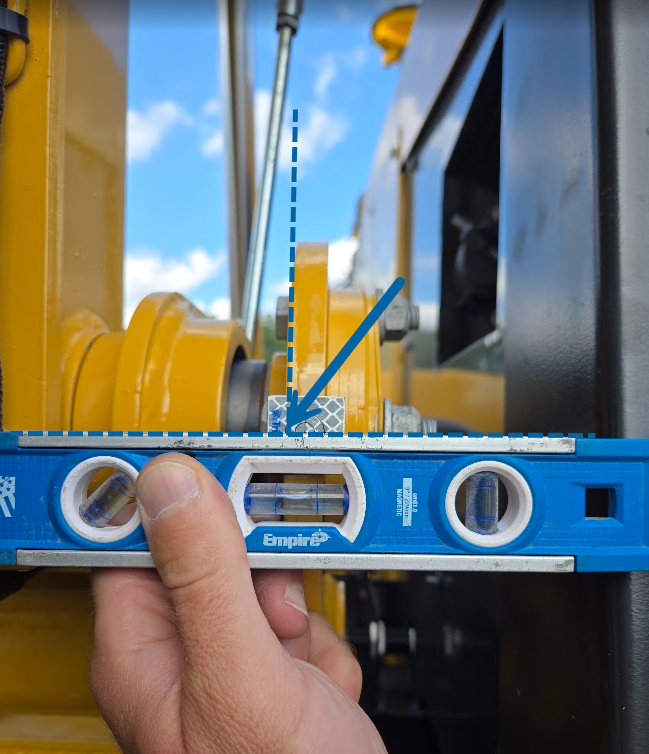
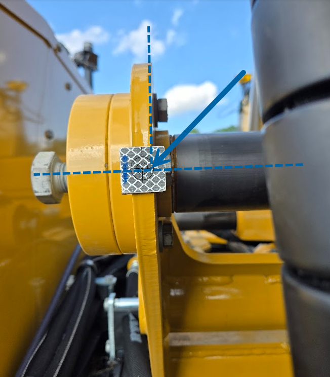
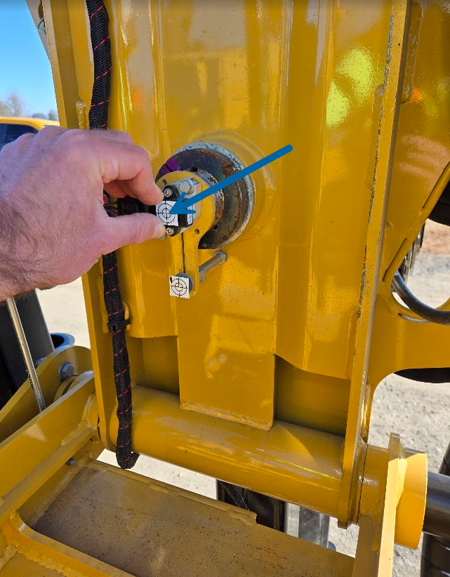
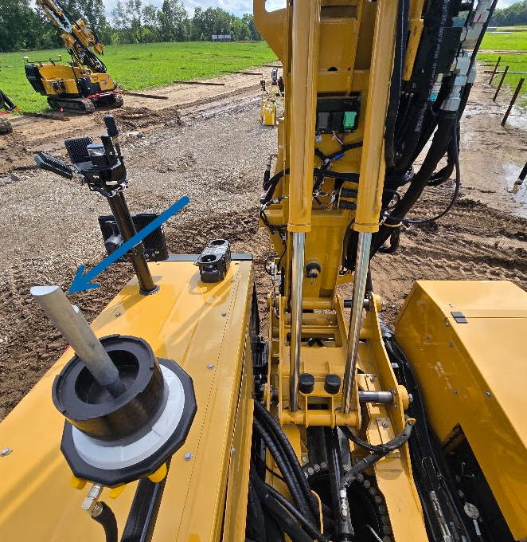
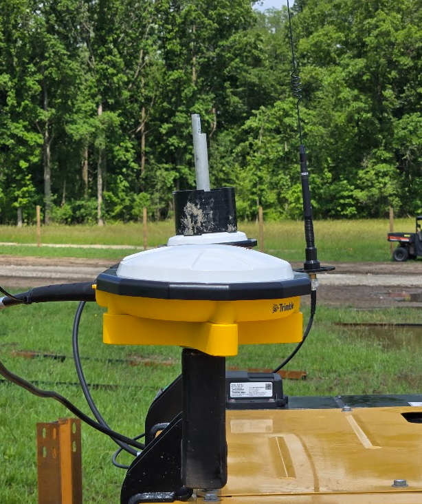
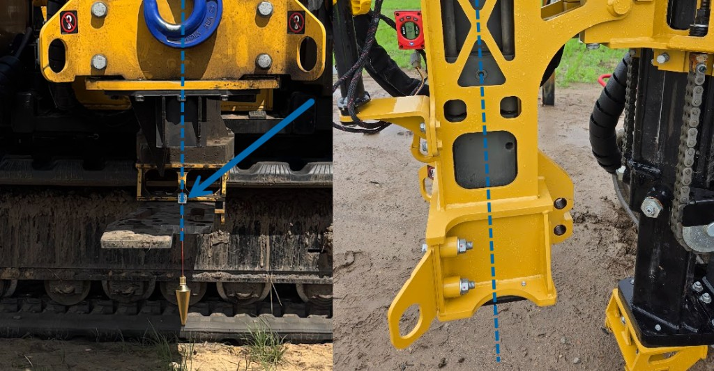

- All shots must use zero rod height in Siteworks and be recorded as control points.
- Plumb the mast in X and Y before shooting.
- Move the X slide all the way left (toward the engine bay).
- Retract the Y slide all the way in (toward the rear of the machine).
- Lower the mast foot as far down as possible.
- Place the machine on a firm, level surface for measure-up.
Do not enter rod height on MB or H in Siteworks — enter post height below (MB & H rod height section) before you hit Calculate Results. The calculator adds post height and APC offset behind the scenes.
- MB = moving-base antenna closest to the mast
- H = heading antenna at the rear of the machine
- Antenna brackets are left of the mast (MB and H mounting)
Groundworks dimensions reference
OEM default values from the Vermeer PD25R measure-up guide. Enter all Use default rows in Groundworks; Measure rows come from your survey and the calculator below. Tap Copy beside any value to paste into Groundworks.
Upload Siteworks CSV with ML, MR, MB, and H. Optional MF (mast foot) enables T5. Optional HC (hammer center) enables T1. When measuring B5, also include MT (Mast Tilt). The app builds CENTER REF and outputs G6, G5, G2, G1, G7, plus B5 when measured, and T5 / T1 when those points are present.
Match your Siteworks project units before computing results.
B5 — Mast Tilt / Mast Pivot BETA
Mast Pivot (Y) is the front/back X-pin center (from ML/MR on the flange face, plus a horizontal offset to pin center). Mast Tilt (MT / X) is the left/right tilt pin center. B5 is the vertical from Mast Pivot to Mast Tilt — always negative on the PD25 because MT is above the pivot.


BETA — needs testing Measured B5 and rebuilt G1/G2/G5/G6 are available for field trials. Compare against prepopulated OEM values before relying on guidance. No special access required.
Resection required Shooting MT (Mast Tilt) usually requires resecting the total station to the rear of the machine so the mast tilt center is visible. Include point MT in your CSV to compute measured B5 and updated antenna left/back values. If MT is missing, the calculator still runs using prepopulated OEM B5 and antenna offsets.

Positive when ML is left and MR is right (offset to the right of the ML→MR line). Example: 0.086 m. Enter 0 if ML/MR are already on the X-pin centerline.
MB & H rod height — APC required for G7
Did you shoot MB and H with the measure-up rod/post? Groundworks needs antenna phase center (APC), not the prism height on top of the post.


Enter post height only — not APC. The calculator adds 4 mm (Zephyr 3 Rugged target center → APC) behind the scenes. P/N 105568 default: 0.200 m / 0.656 ft.
HC — hammer center offset
HC is the hammer center (pile guide / jaw opening center). If you shot the hammer face instead, enter the offset to the true center, measured toward or away from ML/MR.

Positive (+) — shot is on the face, ahead of hammer center (farther from ML/MR). Example: face shot 160 mm toward ML/MR → enter +0.160 m.
Zero (0) — shot is at hammer center.
Negative (−) — shot is between hammer center and ML/MR.
T1, T2 & T3 — plumb pile tuning
Correct T2 and T3 (and verify T1) on a plumb installed pile, not from survey COGO alone.
- Set the machine on a plumb pile and zero guidance in one direction.
- Rotate the machine 180°, set back on the same pile, and verify guidance.
- Adjust T1, T2, and T3 until error is minimized in both orientations.
If residual error cannot be zeroed and you must enter values much greater than 0.10 ft (30.48 mm), revisit Phase 1 calibrations and your full measure-up before relying on guidance.
Optional report details
Fill in only what you want on the PDF header. Skip anything you do not need.
Upload your dealer logo for the PDF header — same optional branding as CTL measure-up and install deliverable. Stored on this device only.